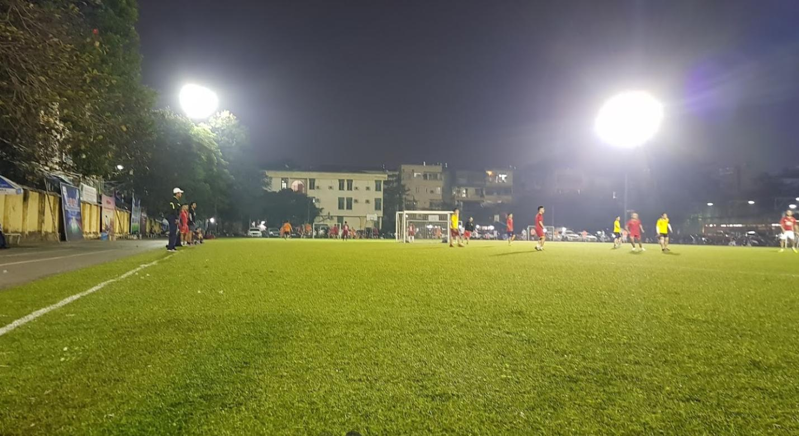
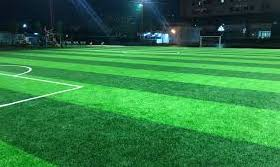
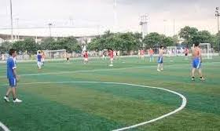
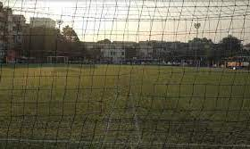

Sân bóng Đại học Thủy Lợi chắc chắn là một trong những sân bóng tốt nhất Hà Nội tại thời điểm hiện nay. Sân Thủy Lợi có ưu điểm là diện tích sân 7 người 30 x 50 rộng rãi, khung thành lớn hơn các sân khác nên một số bạn thủ môn thích “bay nhảy” sẽ phù hợp với sân này.
- Mặt cỏ của sân Thủy Lợi rất tốt khi vừa mới được đầu tư nâng cấp, hạt cao su giảm chấn chất lượng cao, êm ái nên các bạn sẽ yên tâm cảm nhận được mặt cỏ chứ không như một số sân phủ đầy cao su thô cứng gây cản trở trong các pha “tắc” bóng.
Giá thuê sân giao động động từ 500k-1000k
Các dịch vụ:Có bảo vệ,trông giữ xe máy,có nước uống, có wifi free